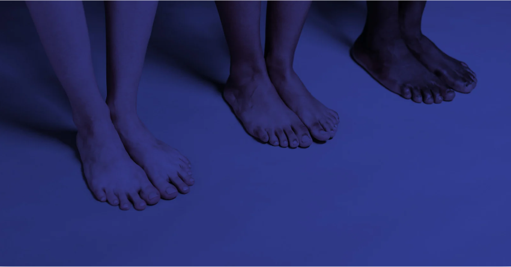
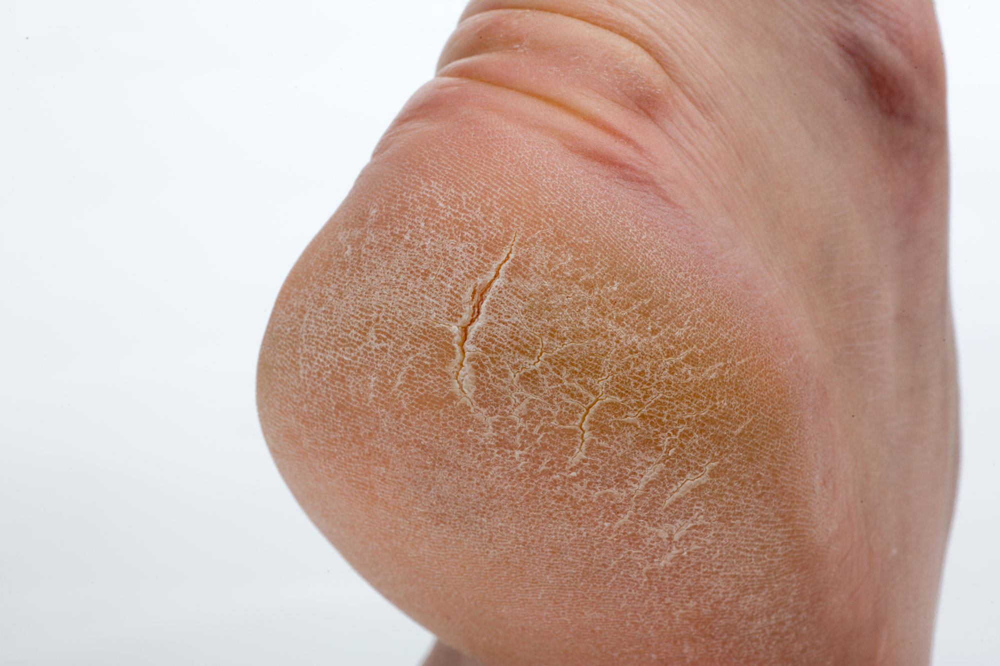
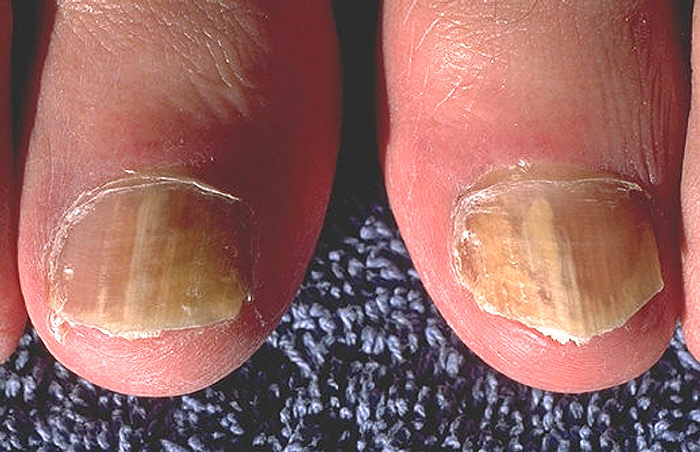
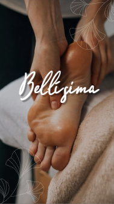
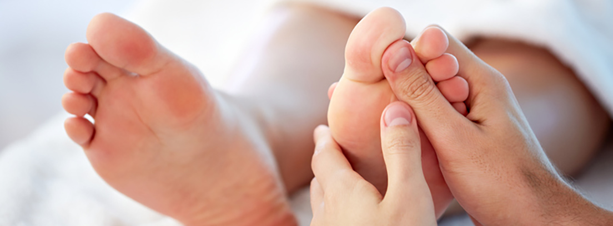

Cada cuidado es un acto de amor hacia vos misma
Te invito, a través de la pedicuría y la reflexología, a aliviar molestias,
liberar tensiones y reconectar con tu bienestar integral. Los pies reflejan el
equilibrio de todo el cuerpo, cada área refleja órganos y sistemas.
Servicios de pedicuría
La pedicuría es una atención profesional orientada al cuidado, prevención y tratamiento de afecciones del pie.
A través de una evaluación personalizada, se abordan problemas como uñas encarnadas, durezas, callosidades,
alteraciones ungueales y molestias dérmicas, promoviendo la salud, el confort y una correcta pisada.
Talones agrietados

Resequedad, presión excesiva o falta de cuidado.
La pedicura evalúa el estado del pie, realiza una limpieza profunda
y el retiro seguro de durezas, tratando las grietas para aliviar molestias,
prevenir infecciones y devolver a la piel su suavidad y elasticidad,
siempre con técnicas y productos profesionales.
Onicomicosis

Infección por hongos que afecta las uñas,
provocando cambios en su color, grosor y textura.
La pedicura cumple un rol fundamental en su detección y tratamiento,
realizando la limpieza y reducción de la uña afectada,
aplicando cuidados específicos y orientando al paciente para evitar la propagación
y mejorar la salud ungueal.
Helomas

Lesión producida por la presión o fricción constante sobre la piel,
generando dolor y endurecimiento localizado. La podóloga evalúa su causa,
realiza la eliminación segura del tejido engrosado, alivia el dolor y
brinda recomendaciones para prevenir su reaparición y mejorar el confort al caminar.
Conocé todos los sevicios en el catálogo de Bellísima
Servicios de reflexología



Estimulo puntos reflejos en pies, con el objetivo de favorecer el equilibrio del organismo.
Su función es ayudar a aliviar tensiones, molestias físicas y estrés, promoviendo el bienestar general
como terapia complementaria al cuidado de la salud.
Patologías crónicas

Algunas de las patologías crónicas más frecuentes son la diabetes,
la hipertensión, la artrosis, el asma y el estrés crónico.
Mi intención al abordarlas es acompañar al paciente, aliviar síntomas, reducir tensiones
y favorecer el equilibrio general del organismo.
Dolencias

Algunas de las dolencias más frecuentes son el dolor de espalda, cervicalgias,
cefaleas, estrés, insomnio y cansancio general. La intención del reflexólogo al tratarlas es aliviar molestias,
liberar tensiones y favorecer el equilibrio físico y emocional del cuerpo,
como complemento al cuidado integral de la salud.
Alergias

La intención del reflexólogo al abordarlas es acompañar al cuerpo en su proceso de equilibrio,
ayudando a disminuir síntomas, fortalecer la respuesta general del organismo y favorecer el bienestar,
siempre como terapia complementaria.
Conocé todos los sevicios en el catálogo de Bellísima
Seguinos en nuestras redes sociales
Contanos tus molestias o dolencias y te decimos el tratamiento adecuado para vos